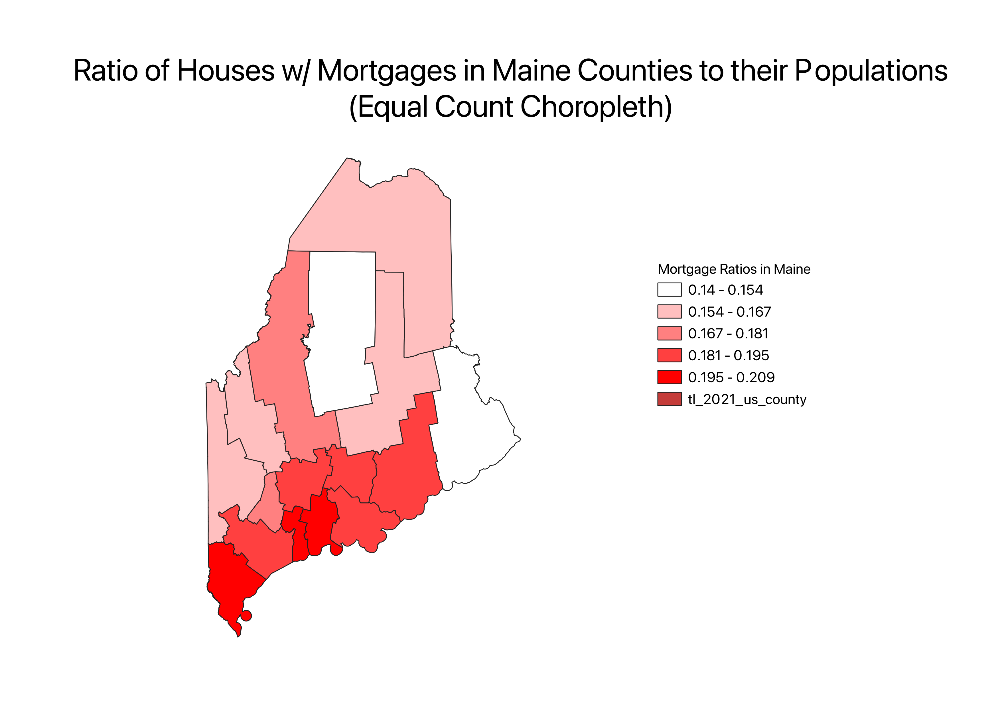

Homework 7 by Sarah Masters
The ratio I decided to use is the ratio of my data values for each county to the population in each county. So the ratio
is the ratio of the number of houses that have mortgages in each county to the population in that county. The reason I decided
to use this ratio is to normalize the data as a percent of the total population in each county. This data is more useful because
it gets rid of confounding that may occur if we don't normalize the data. For instance, we don't know if one county has so few
houses with mortgages because it has a small population or because it has a low financial status. Normalizing by population just
gets rid of one potential confounding variable.

This map uses the "equal count" or "quantiles" classification scheme. This is a great classification scheme because it gets the
median and shows us what is above/below. A con is that it may not reveal subtle patterns.
This map uses the "equal interval" classification scheme. A pro of this scheme is that the intervals are easy to visualize and
intuitive because they are equal. A con is that you may have unrepresented categories.
This map uses the "natural breaks" classification scheme. A pro of this scheme is that it's effective for highly
skewed data. A con is that if the data isn't highly skewed, it doesn't make much sense.
Links to Data
CSV Data
Natural Breaks GEOJSON
Equal Interval GEOJSON
Equal Count GEOJSON